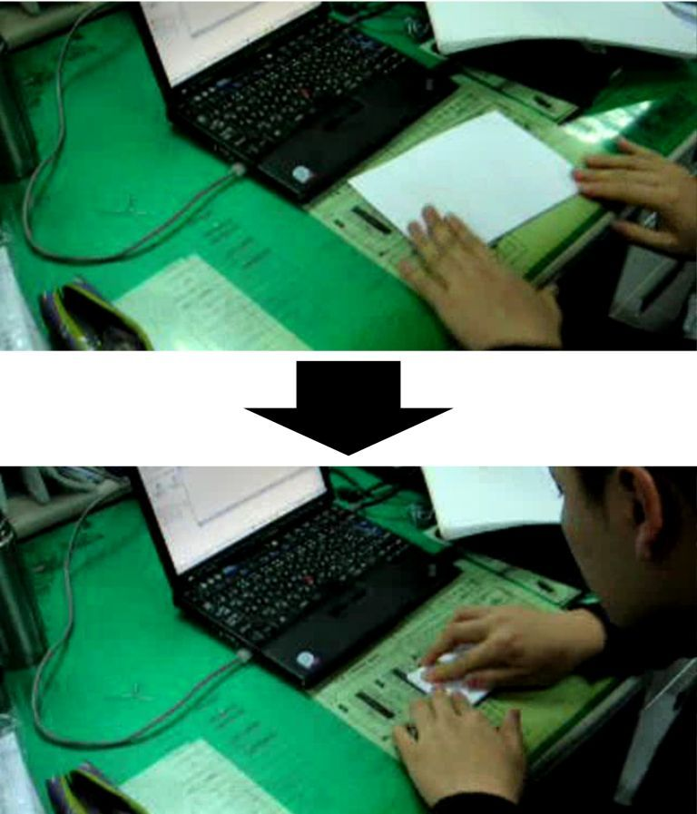
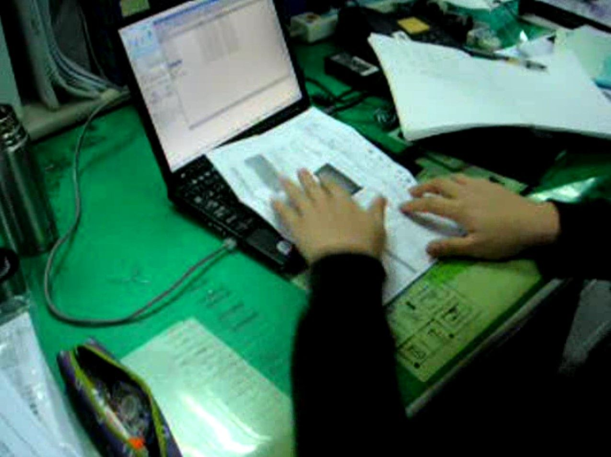
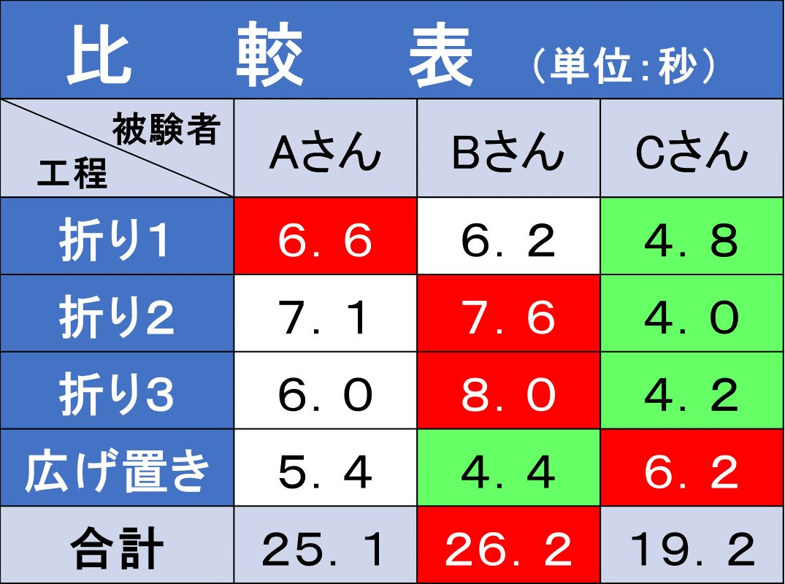
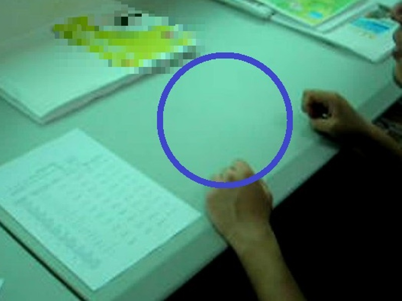
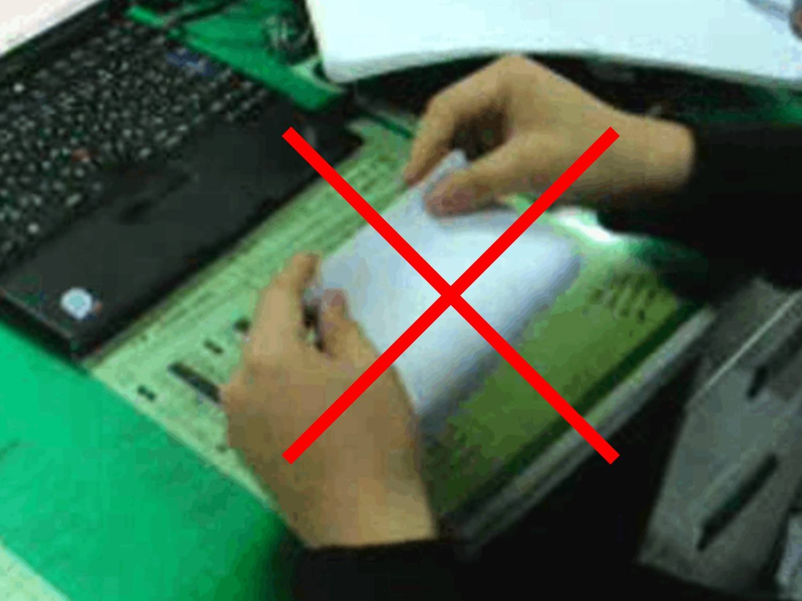
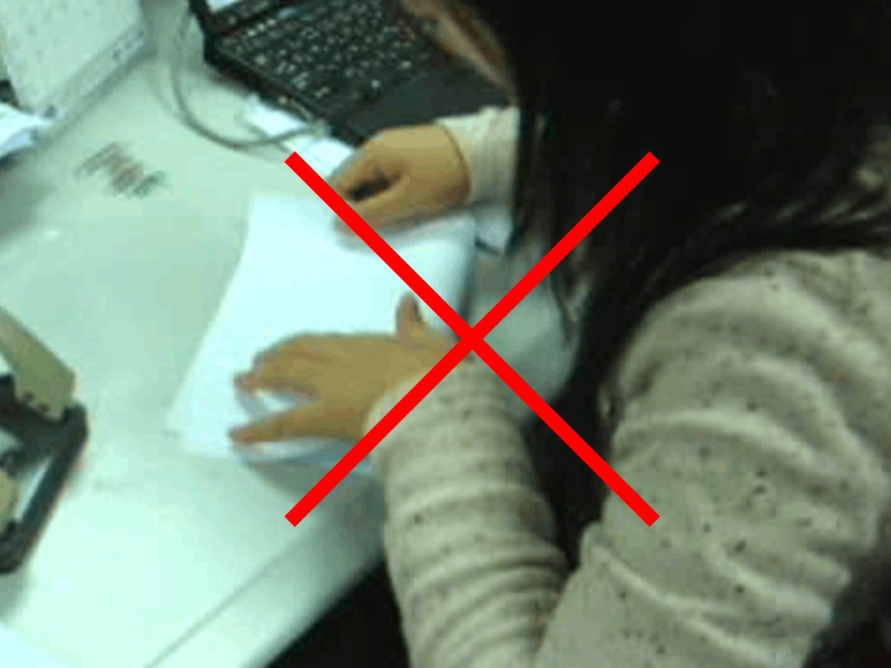
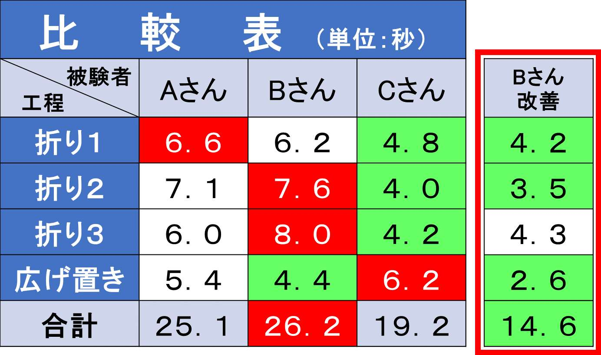
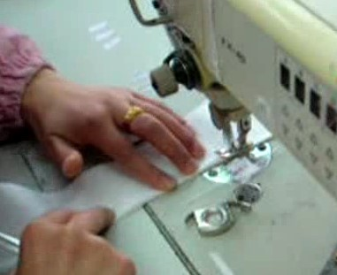

| 「時間」の取扱説明書 [お試し版]: 実践！日常生活でスグに使える時間術 | |
| 田中 章浩 | |
| tnk (2019) | |
［お試し版］
「1日が25時間あれば」
「ずっと夏休みだったらなぁ」
「あと5分、もっとゆっくり寝かせて」
「100歳まで長生きしたい」
あなたは、そう思ったことはありませんか？
では、もっと時間があったら、何がしたいですか？
「気兼ねなくゆっくりしたい」
「家族との時間を楽しみたい」
「遊びたい」
「寝たい」
・・・などでしょうか、まだ他にもいろいろありますよねきっと。
日々のお仕事、本当にお疲れ様です。
世の中の人々は、限られた時間の中で、日々、何かに追い詰められながら一生懸命に生きています。
そんなあなたが、せめて1日あと1時間、自由な時間を生み出せれば・・・
もし1日に1時間自由な時間ができれば、年間15日分になります。
2時間できれば30日、3時間では45日です。
長生きしたい、という方には、もし1日3時間作ることができれば、年間45日も寿命が伸びたとほぼ同等にはなりませんか？
「いや、ワシはより先の未来を見るために、孫の孫のさらに孫の顔を見るために長生きするんじゃ！」
というのならそれは本書では叶えられません。
すぐに本を閉じ、他の方法を探してください。
本書を読む時間はムダになります。
※しかし返金は致しかねます（笑）。
本書では、時短に直結する「効率化ノウハウ」を、実務的な側面から考えていきます。
と、いっても、
時間を作るなんて友人の誘いを断ればカンタンに作れるのでは？
趣味の時間や寝る時間を減らせば時間はスグに生まれるのでは？
そのような安直な極論は取り上げておりませんのでご安心を。
日々の拘束時間、やらなければならない日常の習慣と、時間があればやりたい事などを、パズルのように、どれかを同時並行して組み合わせたり、効率化して時間を短縮したりすることで、時間を作るという発想です。
ライフスタイルは一人ひとり異なります。
本書のノウハウの意図を理解して、少しでも時間を生み出せることに繋がれば幸いです。
それでは、準備がよければ、読み進めてみてください。
あなたはご自身の普段のタスク処理時間を気にかけたことはありますか？
もし無いとしたら、とある方法によって、もっとパフォーマンスを向上させられるかもしれません。
それは、「見える化して計測する」という方法です。
言われてみると、特別な事なんて何も無いですよね。
本章では、人の動作と行動の最大効率化について考えていきます。
以前、とある実験を行いました。
概要は以下です。
「A4の紙を3回折って、広げてテーブルに置くまでの作業時間を計測する」
という、いたってシンプルな実験です。
・ 計測タイムを分析して、問題点の仮説を立てる。
・ そして、その仮説を元に改善した状態で再計測する。
結論を先に言うと、環境・動作・姿勢を改善することで、時間短縮に繋がりました。


【計測結果】
3人計測し、それぞれの計測タイムを分解した結果がコチラ。（数字は秒数）

【分析】
・ 「折りタイムのばらつき」→姿勢が定まっていないので不安定？
・ 「折るごとに遅くなる」→紙を持ち上げて折っているので合わせにくい？
・ 「作業時間が安定している」→環境と姿勢が良い？
【改善点】
1．環境

作業スペース確保（紙を回転させても充分なくらい）。
滑りやすい机にする（紙を回転させるのに抵抗が少ない）。
2．動作

持ち上げをやめる（持ち上げに発生するタイムロスを無くす）。
両手の役割分担（左手は合わせと角の固定、右手は折りの役割）。
3．姿勢

まっすぐ作業台に向く（体の左右のバランスがとれるようにする）。

最も遅かったBの人を改善して再計測。
結果、26．2秒から14．6秒へ、45％短縮。
紙折りの作業に関しては、環境・動作・姿勢を改善することで作業時間短縮に繋がった。
今の作業に必要ないものを置かず、作業に集中できる環境づくりが必要。
動作が一定でロスが無くスムーズにするためには、手順や姿勢、両手の役割分担を意識するのが良いと考えられる。
以上が実験から考察までの流れです。
この実験では、「紙折りの動作」に関して、時間短縮に必要な要素を分析しました。
この考え方は、さまざまな事に応用できます。
例えば、パソコン内の資料。
あなたは、目的の資料を探して開くまでに、何秒かかっていますか？
トヨタでは、10秒以内で開けるように整理しておくという習慣があります。
デスクトップに置いて良いファイルの目安は3列以内だそうです。
普段の作業時間を計測して分析すれば、必要な改善事項が自動的に見えてきます。
もし作業時間が計測できないならば、作業日報という方法もあります。
その日にどのような作業をしたかを記録して「見える化」「定量化」が重要です。
そして数多く計測すればするほど統計としての精度は高まります。
製造業の一部の会社では、時間を計測する専門の役割の人が配置されているところもあります。
ここまで、いろいろと細かめのお話しをしてきました。
この事例でお伝えしたかったことは、 「計測できるようにすると改善しやすい」 ということです。
私自身の計測・分析事例を一部ご紹介します。
・ 「メールやSNSを行っている時間」が短時間で処理できたのは、携帯ではなくパソコンでまとめて処理した時。
・ 「読書をしている時間と進んだページ数」を計測したら、朝の時間帯の方が読書効率が良いと判明。
・ 「睡眠の質」を計測し、快眠できたのは、7時間以上睡眠時間をとり、寝る時に電波が飛ばないよう、フライトモードにした時。
時間効率に影響する要素は、一つとは限りません。
それを特定するためには、まず現状把握、計測からスタートし、あらゆる角度から原因を考えるとよいでしょう。
【まとめ】・ 作業時間を分解して計測し分析すると、改善点の想定ができ、時間短縮に繋がる。 ・ 時間効率に影響する要素は、一つとは限らない。 |
製造業の「工程分解」の概念の解説です。
この「工程分解」という考え方ができると、オフィスワークで仕事を部下に振れずに自分で抱え込んでしまうのを解消できたり、家庭で子供にも料理や家事をうまく手伝ってもらえたりできます。
究極は、「時間をお金で買える！」という発想にたどり着きます。
では、まいりましょう。
いきなりですが、例を挙げます。
画像は、縫製工場で、シャツの衿部分を作る工程です。

お試し版はここまでです。
続きは完全版でお楽しみくださいませ。
下記リンクが商品ページになります。
|
初 版 |
2018年7月14日 |
|
改定最終日 |
2019年6月29日 |
|
著 者 |
田中 章浩 |
|
発 行 元 |
株式会社ティーエヌケー |
|
|
〒980-0004 |
|
|
宮城県仙台市青葉区宮町1丁目1-30 |
|
|
TEL 022-215-8351 |
|
|
FAX 022-352-8920 |
|
|
お問い合わせ フォーム |
Copyright © 2018 Akihiro Tanaka
All rights reserved.